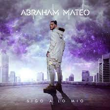

Vídeos Relevantes
Canción mas escuchada de toda su carrera musical:
Videoclip mas premiado:
Es un cantante, compositor, productor y actor español. Con apenas 14 años de edad alcanzó
popularidad
en España con el tema «Señorita», el cual se mantuvo durante casi un año como uno de los sencillos
más vendidos de España.
Su trayectoria se inicia cuando, con siete años de edad, cantó por primera vez ante un público en un
festival en un programa de television llamado Menuda Noche. Actualmente sigue componiendo y
produciendo música. Siendo uno de los artistas mas escuchados en los países de habla hispana.
Ha realizado varias giras musicales en España y Latinoamérica, celebrando conciertos en recintos
importantes.Ha grabado canciones para películas y series de animación y ha participado como actor en
telefilmes y series de televisión en España y Portugal.
Ha colaborado con diversos artistas en grabaciones de estudio y actuaciones en vivo, entre ellos con
Farruko, Jennifer López, Yandel, Luis Fonsi, Sofía Reyes, Becky G, Manuel Turizo, Pitbull... Es
autor y coautor de la mayoría de los temas que ha publicado y ha participado en coautorías con
importantes compositores.
Ha recibido varias nominaciones en Premios Juventud del canal estadounidense de habla hispana
Univision y en los iHeartRadio Music Awards, presentados por una de las cadenas de radio más
importantes de Estados Unidos. En 2014 recibió el Premio a la Identidad Isleña otorgado por el
Ayuntamiento de San Fernando, su ciudad natal.En 2015, la revista Billboard lo incluyó en la lista
21 Under 21's Next Class y en la lista de los diez artistas latinos menores de 25 años más
atractivos.
Canción mas escuchada de toda su carrera musical:
Videoclip mas premiado:
Imágen de su último álbum:
